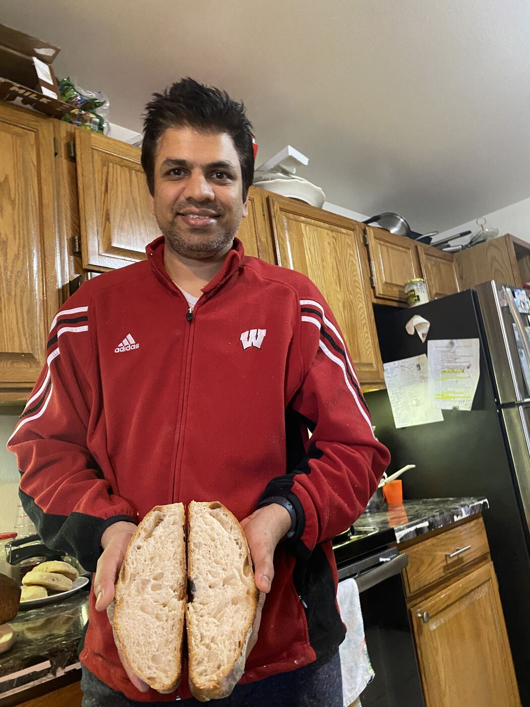

Small batches, slower fermentation
We bake in limited quantities and give the dough more time to ferment, helping build flavor, aroma, and structure while keeping holding time short.
About TRANCHÉ
TRANCHÉ focuses on breads, buns, and European-inspired bakes made in smaller batches with more hands-on baking and a shorter distance between the oven and the table.
Meet The Baker
I’m Naveen. I live with my wife, who works in finance, and our two school-going daughters. Long before TRANCHÉ, I studied hotel management at IHM Bhopal and graduated in 2000. I then spent a couple of years working in an Indian kitchen at one of Connaught Place’s leading hotels in New Delhi. I still make a very good curry.
My career later took me into programming and eventually to the United States. There, I was introduced to small bakeries and breads quite different from the packaged loaves I had known, especially sourdough. A visit to Tartine Bakery made me want to understand bread more deeply. I began learning from books and online videos, baking at home and sharing the results with friends and colleagues. Their enthusiasm kept me going.
When we returned to India, I missed the kinds of bread I had grown used to. I continued baking for my family and gradually began sharing loaves with friends. Their encouragement gave me the confidence to consider starting a small bakery. Most importantly, my wife believed that this interest could become something real and encouraged me to take that step.
That is how TRANCHÉ began: with home baking, repeated practice, encouragement from friends, and the support of my family.

How We Bake
These are the practical decisions that shape how the bread tastes, feels, and keeps.
We bake in limited quantities and give the dough more time to ferment, helping build flavor, aroma, and structure while keeping holding time short.
We choose fresh flour, quality dairy, real butter, olive oil, and other ingredients for flavor and function, without commercial improvers or preservatives.
Orders confirmed by 5pm are generally prepared for next-morning delivery, which keeps the bakery aligned around freshness instead of stockholding.
What you see on the site is our own bread from the kitchen, not stock photography and not over-styled food imagery.

Ingredients & Standards
Bread Guide
Our breads are not designed to have the uniformly soft, melt-in-the-mouth texture of packaged sandwich bread. Without commercial improvers and softeners, lean loaves generally develop a more pronounced crust and a firmer, chewier crumb with a more substantial bite. Enriched breads are softer, while loaves with a higher proportion of whole wheat feel denser by design. This chew and variation in texture are intentional parts of the character of each bread.
Without preservatives or bread softeners, bread will dry faster if left exposed to air. Our lean breads contain no added fat, so they firm up sooner than breads enriched with butter or oil. Keep them covered at room temperature, or freeze them for longer storage.
Very high whole wheat percentages can make bread much denser. Our blends balance a softer texture and good flavor with the fiber and nutrients contributed by whole wheat.
Not automatically. White flour is more refined than whole wheat, so removing the bran and germ lowers the fiber and reduces some vitamins, minerals, and protein that come from those outer layers. But the inner part of the grain still provides starch, some protein, and useful nutrition. In bread, white flour also gives a softer texture and can feel easier to digest for some people. The better choice depends on the kind of bread you want and how it fits into the rest of your diet, not on a simple "good" or "bad" label.
Lean doughs contain no added fat or sugar and generally bake with a crustier exterior and a firmer chew. Enriched doughs add some fat through ingredients such as butter, olive oil, or dairy for a softer, richer crumb. Highly enriched doughs include more fat and sugar, often with additional dairy, chocolate, or fillings, making them the softest and richest of the three. Each product identifies its dough style so you can choose the balance of crust, softness, and richness you prefer.
Explore the full range with ingredients, flour balance, texture, and size clearly shared for each bake. For ordering, storage, and delivery details, visit the FAQ.